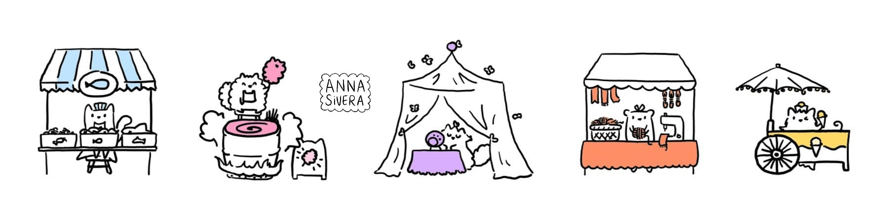
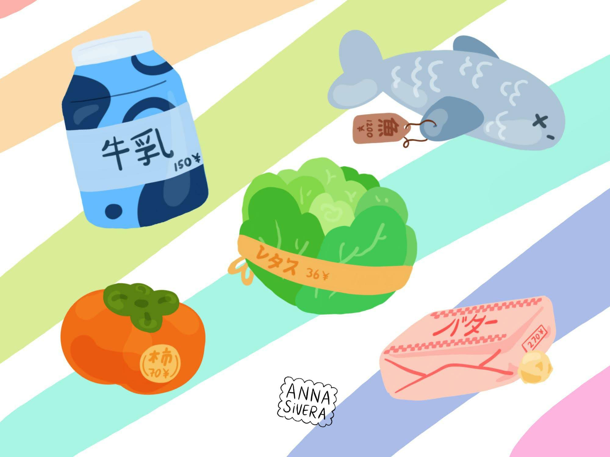
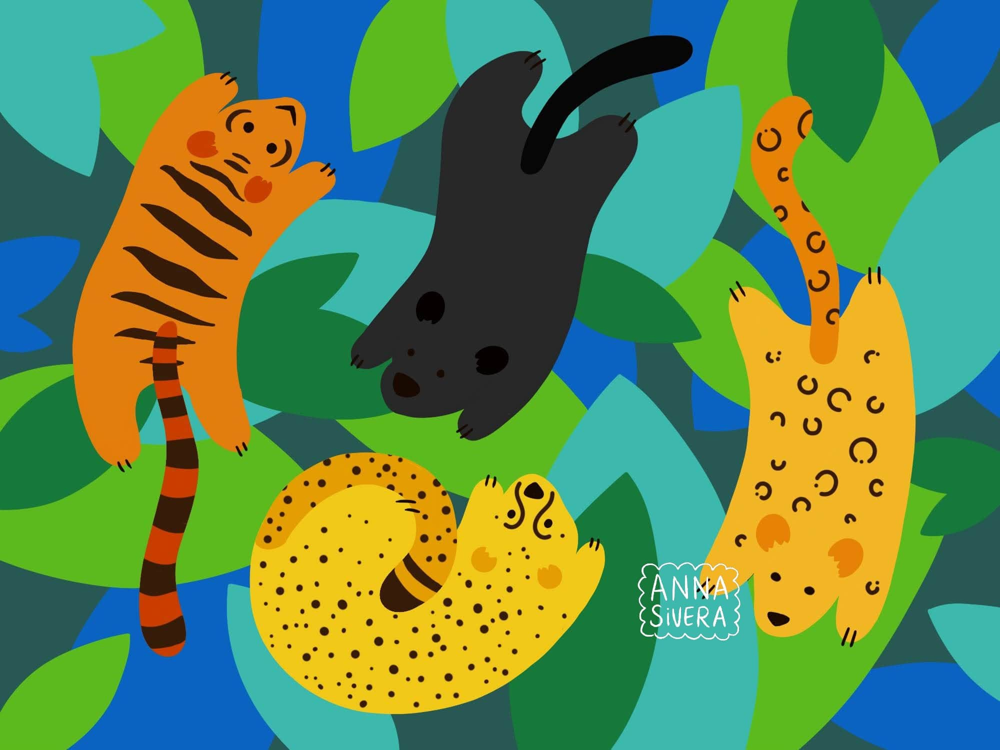
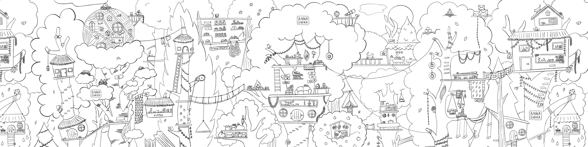
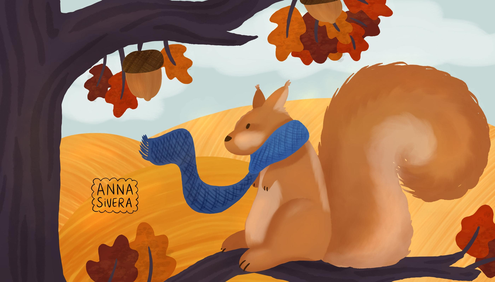
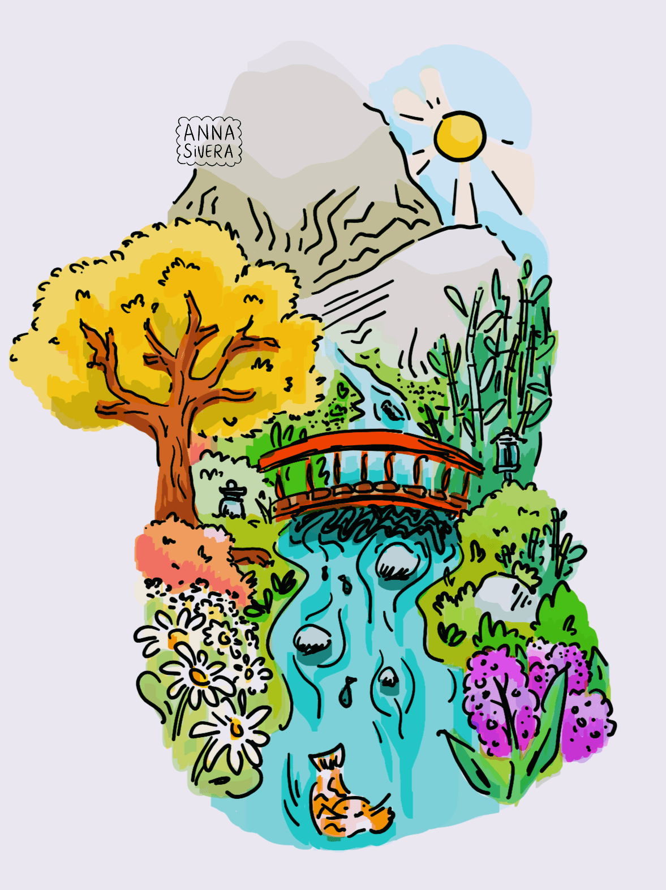
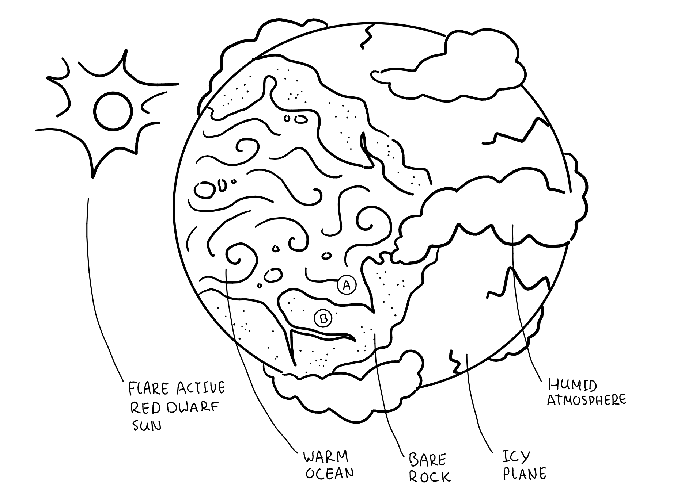
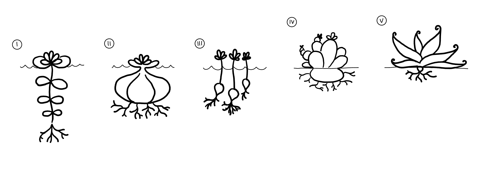
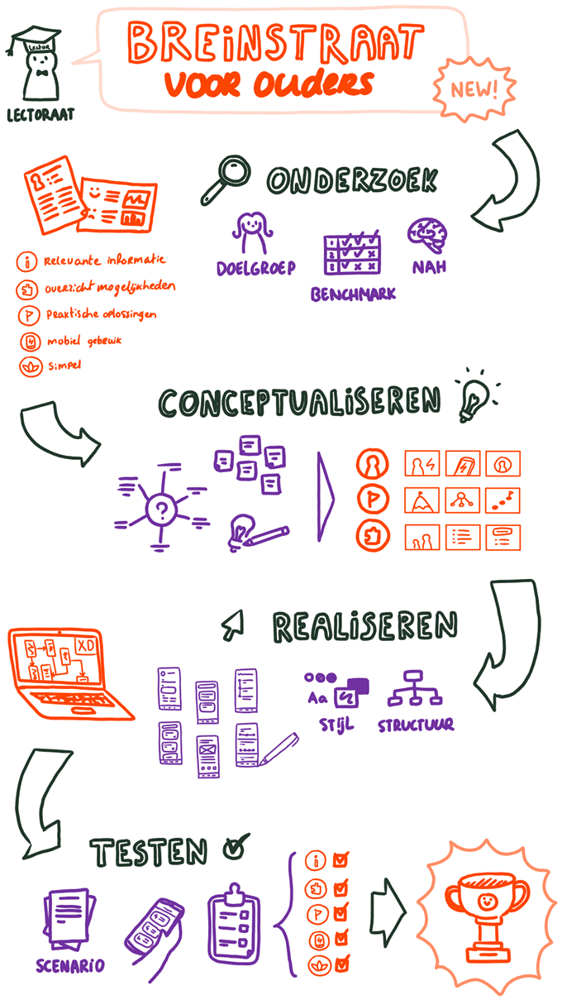
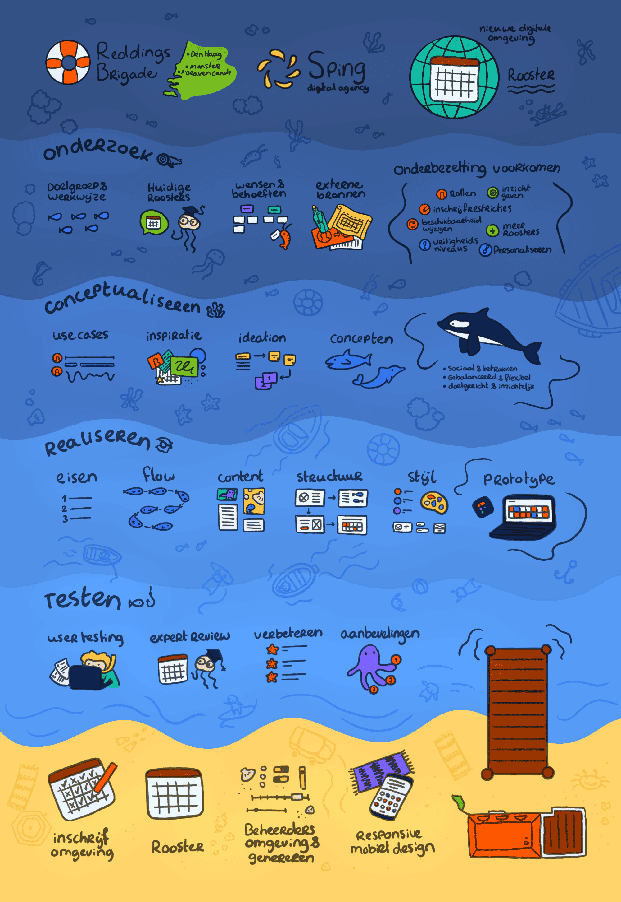

Anna Sivera van der Sluijs
illustration
Enjoy some of my personal illustrations!






Timeless Space
immersive instalation / biofeedback / exhibition
Why? Created for the Science to Experience exhibition at the V2_ Lab for the Unstable Media, this project challenges our objective perception of time. It aims to make participants aware of the subjective experience of time by connecting it directly to their personal physical state.
How? We created an interactive installation centered around the human heart as an internal ticking clock, a rhythm that naturally speeds up or slows down to reflect our inner state. When entering the enclosed "timeless space," the environment adapts to this inner state. Using a heartbeat sensor, the participant's real-time physical data is measured and translated into dynamic sounds and visuals, magnifying their internal rhythms into an immersive sensory experience.
What? During the exhibition, participants could enter the timeless space to escape the constraints of objective time and focus entirely on their subjective experience. To practically demonstrate this, we asked participants upon exiting to estimate how much time had actually passed. This resulted in a wide range of varying guesses, effectively illustrating how each person lives accoring to their own unique rhythm.


Dreamreader
computer vision / artificial intelligence / human computer interaction
Why? Created for an exhibition centered on artificial creatures, this project challenges preconceived notions about the capabilities and limits of technology. To explore how robots can be more than just machines of practical production, we created an artificial creature with the seemingly useless purpose of dreaming.
How? The sleepy artificial creature transitions between waking and sleeping states. When awake, it observes its surroundings through live camera recording and labels what it sees though computer vision equipped with pattern recognition software. When the creature falls asleep, the gathered data functions as input for an AI image generator that translates those waking observations into visual "dreams."
What? The exhibition audience was invited to interact with the creature and show it different objects. When the creature fell asleep, visitors could lie down on a comfortable bed of blankets alongside it. Above them, the creature's dreams were projected, appearing in real-time. As participants recognized moments from their interactions and the surrounding exhibition within the dreamy shapes, it reflects how our own dreams are shaped by daily waking experiences, highlighting the parallels between human and machine.


Bat Experience
wearable / sensory modalities / arduino
How? Thomas Nagel famously stated that as humans, we can never truly know what it is like to be a bat. This project challenges these boundaries with a wearable set of sensors that adapt the unique sensory experience of bats to humans, evoking a new understanding of more-than-human perception.
How? Bats navigate their environment using echolocation, listening to ultrasonic sounds that echo off objects for three-dimensional spatial localization. To replicate this, we utilized Arduino hardware, combining an ultrasonic distance sensor with headphones to make echolocation audible to humans. To complete the bodily experience, the hardware components were fashioned into a wearable, winged backpack, allowing the wearer to freely explore the space as a bat.
What? The experience was practically evaluated by having blindfolded test subjects navigate through a maze. The results were highly successful: after a short period of practice, participants were able to effectively rely on their artificially extended "bat senses" move safely through their environment, accessing a new conception of physical space and consciousness.


Cat-Computer Interaction
prize winning / empirical research / animal-computer interaction
From the evaluation: "A really impressive project. The inventiveness shown here is really quite something, both in the formulation of your design principles and the prototype testing. Also worth highlighting is the attention to detail with which you conducted the experiment."
Why? Since domesticated animals such as cats are increasingly exposed to modern technologies, this research explores the emerging field of Cat-Computer Interaction (CCI). Through a comprehensive examination of existing literature, we established how technology can effectively cater to cats' physical, cognitive, and emotional needs.
How? Based on scientific insights, we established a foundation for cat-centered design in the form of five distinct principles, or "heuristics." These heuristics cover the specific elements necessary for successful interaction between cats and technology, providing a practical framework that can be applied when designing for CCI.
What? As an initial evaluation, we tested the heuristic on cat vision in an experiment with three cats. In line with our cat-centered approach, the results highlighted not solely the importance of this specific heuristic, but also the need for a holistic approach towards cats as diverse non-human users with varying personalities and morphologies.

Evaluating Art-Based Science Communication of Quantum Physics
academic research / science communication / art
Why? Quantum physics is notoriously complex and challenging to communicate to the general public. This research proposes art-based science communication to bridge this gap. By utilizing metaphors, narratives, and visualizations, artistic engagement has the unique potential to elicit emotions, reach wider audiences, and significantly improve the understanding of highly abstract scientific concepts.
How? To study its effects, I created an interactive art installation representing the quantum phenomenon of wave-particle duality, in collaboration with quantum experts. The intervention was exhibited in a public library, and its effects on citizens were evaluated using the framework from research group IMPACTLAB, measuring both output (demographics and science capital) and outcome (emotions and direct effects on participants).
What? Quantitative statistical analysis revealed that experiencing the art-based intervention led to positive changes in participants' knowledge, interest, attitudes, and behavioral intentions regarding quantum physics. Although the measured effects were small, the findings suggest that art-based science communication can contribute to the science communication of complex and abstract scientific concepts.
Sprouting New Cosmologies: Decentering Space through Speculaitve Astrobotany
posthumanism / speculative / philosophy / academic research
From the evaluation: "Thank you very much for your engaging, articulate and thought-provoking paper. (...) I found the section on Plants as astronauts especially intriguing. And of course your own speculation about life on Alpha Centauri which makes the discussion more focused and gives a concrete example of the challenges but also opportunities!"
Why? Space exploration is deeply entrenched in anthropocentric and colonial paradigms. This project aims to decenter these narratives by shifting the focus towards the easily overlooked but indispensable plants as astronauts, referred to as astrobotany.
How? Actively taking a plant perspective,opens up space to re-evaluate if and how we might approach cosmic exploration with entirely different ethical framing. To aid in embodying our botanical kin, this study integrates literature and artistic works that explore various facets of astrobotany. The paper culminates in speculative fabulation that envisions the terraforming of the exoplanet Proxima Centauri b by plants.
What? Through artistic research, this project demonstrated that achieving multispecies justice requires us to envision space not as a frontier for human conquest, but as a shared environment. It proposes a cosmos where life in its many forms might take root and thrive, evoking new imaginaries of the futures we want to grow.


Epistemic Agency in an AI-Mediated Future: Participatory Ethical Deliberation through Moral Imagination Workshop
workshop / speculative / philosophy / art / academic research
From the evaluation: "Both first and second supervisor also praise Anna for doing something 'out of the box', for planning the whole activities so well, and for genuinely carry out interesting and useful research. Well done!"
Artificial intelligence (AI) is an emergent technology that is being rapidly integrated throughout society. It assists or replaces epistemic tasks that have traditionally required human cognitive effort, leaving ethical uncertainty and regulatory voids in its wake. In becoming intertwined in our knowledge ecology as a poietic technology, AI especially challenges the concept of epistemic agency, the control we have over our beliefs. I argue that participatory ethical deliberation is necessary to examine this disruption of human epistemic agency by AI.To enable such participatory ethical deliberation, I proposed and evaluated a moral imagination workshop in a local neighborhood. With elements of speculation and art-based engagement, the workshop empowers participants to express their desired AI-mediated future with regards to epistemic agency through the making of “Magic Machines”, regarding them as experts by experience. In doing so, it enables the public to make a meaningful contribution to philosophical discourse from which it is too often excluded.
Through qualitative reflexive thematic analysis of the workshop's proceedings and the created machines, a conception of epistemic agency arose that is relationally situated, inherently pluralistic, and an essential human value. To conclude, I propose the integration of contextual friction in AI systems to ensure active engagement with the epistemic agency of human knowers now, and in the future.
Shining light on Dark Patterns
interactive essay / digital design / academic research
From the evaluation: "Congrats on this work, I think it is outstanding. You managed to combine different complex tasks (research, writing, designing, illustration, prototyping, publishing, referencing, typography) into one coherent final product, that is convincing in its concept."
Why? On the web, designers rely on intuitive design patterns to create user-friendly experiences. However, when stakeholder goals are prioritized over user needs, these patterns can be weaponized to intentionally mislead users, and turn dark. This interactive visual essay examines and critiques these "dark patterns", from their origin to the why behind their use.
How? The essay bridges theory and practice by combining a literature review with firsthand experiential learning, as dark patterns are integrated directly into the user interface.
What? The essay concludes by emphasizing the need and benefits of ethical design and provides practical advice on how to correct dark patterns with examples of "light pattern" redesigns that use psychological insights to help users instead of deceiving them.
Care Code
conversation-keeper / design / society / wellbeing / multicultural
Created together with Ankita Sanjeevi, Chisanga Mukuka, Jessica Priscyla Tallabas Ezqueda, Michelle Bak and Yousef Lebbad
Why? Asylum seekers and undocumented migrants face severe mental health challenges. When they need psychiatric care in the Netherlands, for example in cases of PTSD and depression, they receive this from Dienst Justitiële Inrichtingen at the Center for Transcultural Psychiatry (CTP) Veldzicht. However, standardized Western treatment methods and complex questionnaires frequently fail to effectively capture these patients' understanding of their treatment trajectory due to language barriers and cultural differences. Therefore, the goal of this project was to design a culturally sensitive "conversation keeper" to bridge the communication gap between multicultural patients and their care providers.
How? Working within a multidisciplinary, international team as part of the Digital Society School traineeship, we worked through iterative SCRUM sprints. We began by mapping the complex systemic journey of an asylum seeker in the Netherlands, conducted online interviews with both patients and healthcare professionals and observed treatment sessions. A crucial research insight emerged: while traditional communication failed, almost all patients actively used smartphones and felt comfortable using WhatsApp.
What? The result is Care Code, an accessible, low-tech toolkit consisting of a physical booklet (translated into Arabic), a pencil case, and a personal QR card. Patients use the booklet in their own time to creatively answer open-ended questions about their thoughts and feelings. They then easily share these responses with their care provider via WhatsApp using their personal QR code. This hybrid physical-digital solution serves as an empathetic conversation starter for subsequent therapy sessions. Initial testing showed high patient motivation and yielded highly insightful responses, leading CTP Veldzicht to actively implement Care Code in their treatment programs.
Breinstraat
app / design / society / wellbeing
From the commissioning party: "What makes Anna distinctive is that she knows how to involve the target group with great tact and empathy, as well as being very capable of creating attractive and feasible concepts in a creative way and based on the needs of the target group and goals of the client."
Why? Parents of children with Acquired Brain Injury (NAH) often struggle to find relevant information due to the highly diverse and complex nature of the condition. To address this, I worked under the Lectorate Revalidation and Technology of The Hage University of Applied Science with rehabilitation center Basalt and the Hersenstichting to expand their social platform "Breinstraat" to include parent support.
How? To understand the parents' needs, I employed a user-centered design process featuring literature studies, benchmarking, and personal participatory workshops (including emotional journey mapping). The research revealed that parents lose precious time and energy navigating fragmented healthcare resources and experience a frustrating gap between medical theory and daily practice. Consequently, I adopted a mobile-first approach, prioritizing a simple, calm, and low-barrier interface to minimize cognitive load.
What? This concept was iteratively translated into a high-fidelity prototype structured around three core features. First, with a personal profile, content is automatically filtered to match the child's specific NAH situation. Second, support options can be found in a community-driven overview of treatments, schools, and organizations, which is enriched by the practical experiences and reviews of other parents. Finally, to turn these support options into action, the app features a planning tool to break down complex daily challenges into manageable, step-by-step plans, which can be shared with and adapted by other parents facing similar hurdles. The final design was positively validated through usability testing with the target audience.

Preventing understaffing in the lifeguard brigades
platform / design / society / wellbeing
From the evaluation: Anna successfully managed to develop a concept for three different clients and a commissioning party with a clear voice, meeting the needs of all stakeholders.
Why? Lifeguards on the Dutch coast play an essential role in ensuring the safety of beach visitors. To maintain safety, a sufficient number of lifeguards with the appropriate skills must be present on the beach at all times. To achieve this, an effective schedule was designed based on thorough research and close collaboration with the lifeguards themselves.
How? To understand the high-stakes context of the lifeguards, I adopted an user-centered approach. I began with exploratory research, including on-site observations at the three coastal brigade stations to map their ecosystem. I analyzed their existing scheduling tools and conducted "card sorting" sessions with the lifeguards to accurately prioritize their specific needs and desired functionalities. Using Dovetail for qualitative analysis, these insights informed ideation workshops with Sping's UX designers. We iteratively developed concepts into a Minimum Viable Product (MVP), designing the flows, wireframes, and a cohesive design system. Through usability testing using Lookback and expert reviews, the prototype was continuously refined.
What? The final deliverable is an interactive, high-fidelity prototype of a custom scheduling application. The app effectively prevents understaffing by empowering volunteers to easily sign up for shifts and roles, check their schedules, and manage their availability on the go. This platform successfully provides the lifeguards with an intuitive tool tailored to their unique operational workflows, ensuring the beaches remain safely staffed.
